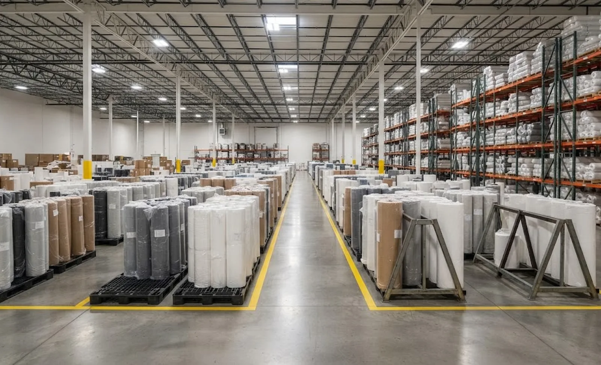
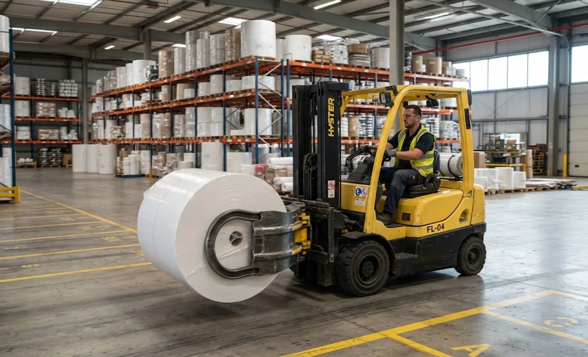

Published October 6, 2026 | By HDPTH Technical Editorial Team

Buyers spend weeks specifying a slitter rewinder and half an afternoon deciding where its output will live. That asymmetry costs real money: edge dents from clamp trucks, ovals from side-stacked soft rolls, condensation damage, and labelstock blocks that formed while a pallet waited two weeks in summer heat. None are machine faults, and none appear on a customer complaint as anything but your name. The good news: roll storage responds quickly to a short list of deliberate decisions.
Orientation: the first and biggest decision
A roll standing on its end faces — eye-to-sky — carries its weight evenly and cannot telescope; the safe default for film, nonwoven, paper and hygiene webs. Rolls on their sides — eye-to-horizon — fit tighter footprints and suit clamp trucks, but under load the lower wraps flatten into a permanent oval, and soft rolls telescope into their neighbours. The compromise most plants land on:
- Eye-to-sky for soft, large-diameter or high-value rolls, on marked lanes or in roll racks and cupped pallets.
- Eye-to-horizon for firm, small and medium rolls with short dwell time, on cradles over a wide contact area — never directly on concrete, never in tall stacks.
- Whatever the choice, it should match the packaging specification — wrap, end protection and label designed for the orientation the warehouse will actually use.
Climate: fight condensation, not the thermometer
Paper, labelstock and hygroscopic nonwovens want roughly 45–55% relative humidity; films suffer when cold rolls meet warm air. The dominant failure mechanism is condensation: a roll from a cold corner wicks moisture into its outer wraps when moved into warm humid air, and days later the customer finds wavy edges or blocked layers. The responses are inexpensive: keep warehouse temperature close to the converting hall, avoid stacking rolls against exterior walls and roof vents, let wrapped pallets equalise before unwrapping, and record temperature and humidity so claims can be discussed against defined conditions.

Time: give every roll a use-by date
Storage damage is usually time plus condition. Adhesive-bearing constructions creep and edge-bleed over weeks; paper gains or loses moisture; films slowly relax. Set a maximum storage time per product family — often weeks for labelstock, months for film and nonwovens — print it on the roll label, and enforce first-in, first-out with lane logic or scan-based inventory. Rolls should stay wrapped until they ship: an opened roll is an open path for moisture, dust and edge damage.
Handling and floor plan: design out the dents
Two numbers govern warehouse design: roll weight and roll dimensions. Get them from production data — heaviest parent roll, largest diameter, widest pallet — and plan backwards:
| Decision | Input to use | Common mistake |
|---|---|---|
| Floor loading and lane width | Heaviest roll plus pallet plus equipment axle load | Designing from average, then exceeding capacity in one corner |
| Handling equipment | Weight, orientation, lift frequency | Roll clamps on everything — clamp pressure dents soft rolls |
| Storage furniture | Diameter, crush strength, dwell time | Flat racking for round rolls; cupped racks and A-frames exist |
| Door, aisle and turning geometry | Largest pallet footprint and equipment radius | Aisles that force drivers into a compromise daily |
The overriding principle is to minimise handling steps: every lift is another chance for a dented edge. The best warehouses move a roll from rewinder to storage lane to dock with two touches, and the roll unloading system on the machine is chosen to match.
The handover: treat it like an interface
Plants lose the fewest rolls when the transfer from machine to warehouse is specified like a machine interface: rolls leave the rewinder wrapped and labelled per the packaging standard; routes, staging lanes and assigned equipment are marked on the floor; and identity, dimensions, weight and quality status transfer with the roll — ideally by scan. In the site preparation checklist for a new machine, add the warehouse questions early: where rolls land, how far they travel, and who owns them after release. The answers cost nothing at planning time and a lot in claims later.
Planning a new converting line end to end?
Send HDPTH your roll sizes, weights and shipping volumes. We size the unloading, staging and storage interface alongside the machine — so rolls leave the rewinder ready for the warehouse you actually built.
Submit Your Project InquiryFrequently asked questions
Should finished rolls be stored eye-to-sky or eye-to-horizon?
Eye-to-sky — the roll standing on its end faces — is the safe default for most converting webs because its own weight loads the wraps evenly and cannot cause telescoping or flattening. Eye-to-horizon stacking saves floor space but risks flattening a permanent oval into the lower wraps, especially on soft film and nonwoven rolls. If side storage is unavoidable, use cradles that support the roll over a wide contact area, limit stack height, and rotate stock quickly.
What temperature and humidity should a roll warehouse maintain?
Target a stable environment close to the temperature of the converting hall — roughly 18 to 24°C — with relative humidity around 45 to 55 percent for paper, labelstock and hygroscopic webs, and avoid daily swings of more than a few degrees. The real enemy is condensation: a cold roll moved into warm humid air wicks moisture at the outer wraps and edges. Allow palletised rolls to equalise before unwrapping, and write the environmental limits into your storage and shipping procedures so claims can be evaluated against defined conditions.
How long can finished rolls be stored before quality suffers?
It depends on the web. Film and nonwoven rolls tolerate months; adhesive-bearing constructions such as labelstock and tape gradually creep and edge-bleed; paper absorbs or loses moisture. Define a maximum storage time per product family, print it on the roll label as a use-by date, and manage the warehouse so nothing exceeds it. Keep rolls in their original wrapping and re-wrap if opened — an unwrapped roll edge is an open moisture and dust path.
What handling equipment should be planned with the warehouse?
Match the equipment to roll weight, diameter and orientation: pallet trucks and forklifts with roll clamps or spears for eye-to-horizon moves; core probes, hydraulic roll lifts or A-frame carts for eye-to-sky transfer; overhead cranes with core-grab attachments for the heaviest parent rolls. Minimise handling steps — every extra lift is a dented edge — and specify floor loading, aisle widths and door heights with the real roll dimensions and turning radii in hand, not estimates.
What should go into the handover between the slitter rewinder and the warehouse?
Three things. First, rolls leave the machine wrapped, labelled and identified as specified in the roll packaging stage. Second, the transfer route is defined: floor markings, staging lanes and assigned equipment. Third, the record transfers with the roll — identity, dimensions, weight and quality status, ideally scanned into the warehouse system. Plants that treat this handover as a designed interface lose far fewer rolls to handling damage.